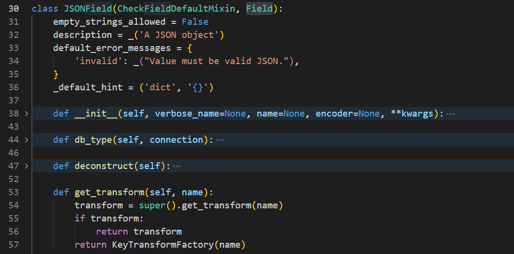
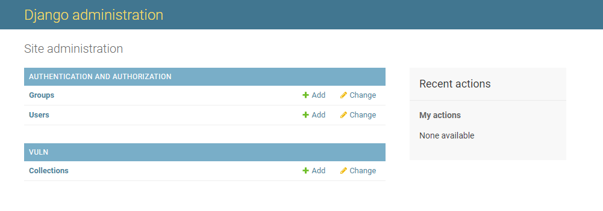
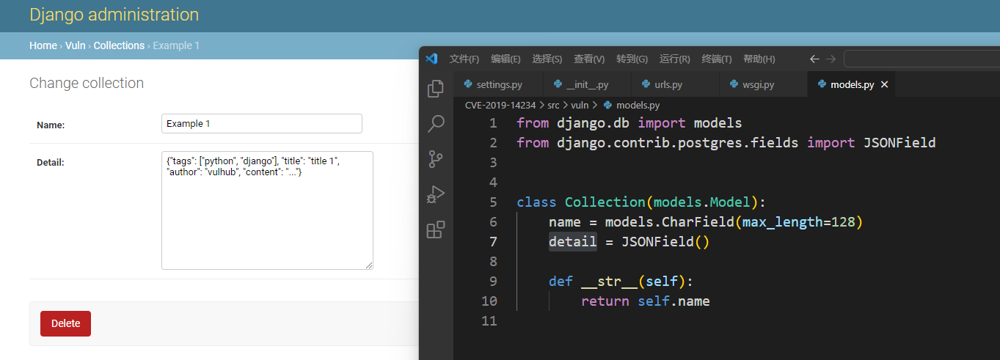
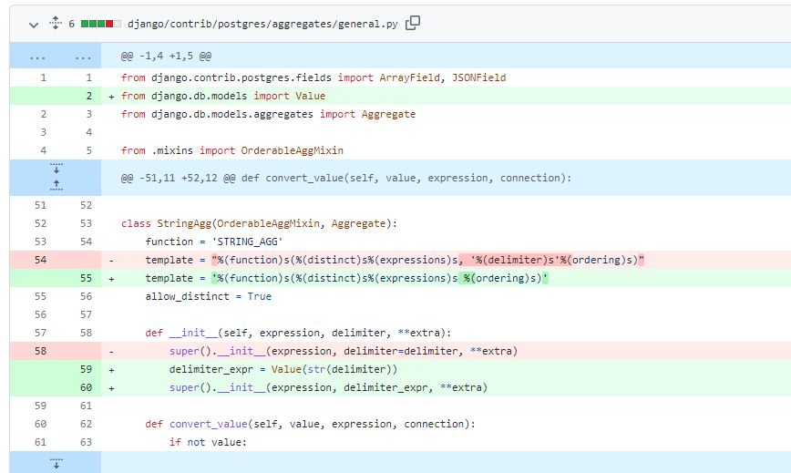
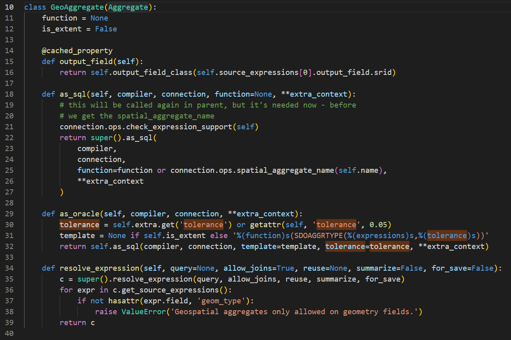
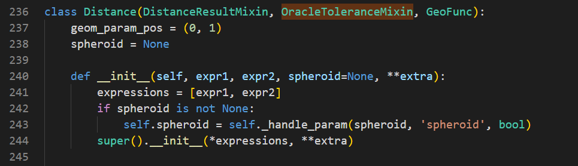
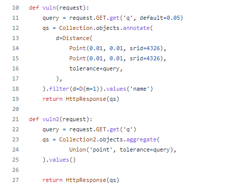
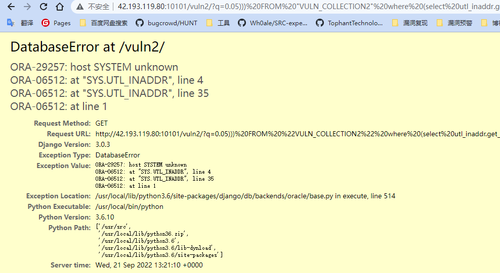
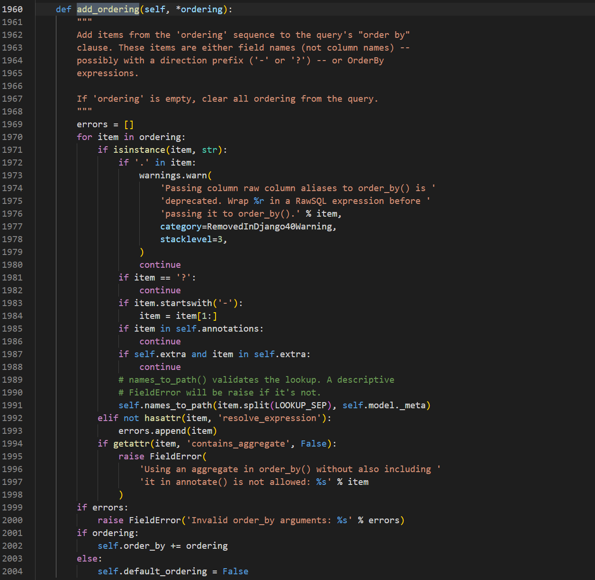
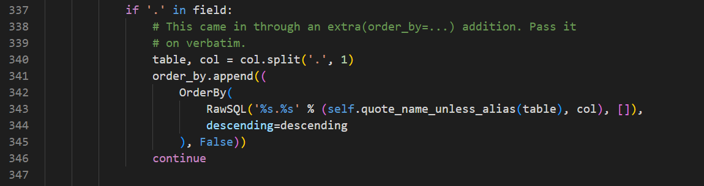

细数Django框架核心历史SQL注入漏洞（上）
本文首发于奇安信攻防社区：https://forum.butian.net/share/1923
本文仅用于技术讨论与研究，文中的实现方法切勿应用在任何违法场景。如因涉嫌违法造成的一切不良影响，本文作者概不负责。
0x00 前言
最近总结了一下 Django 框架曾经出现的 SQL 注入漏洞，总共有七个 CVE ，分别都简单分析复现并写了文章，总体来说会觉得比较有意思，在这里分享一下。
0x01 目录
本篇文章分享四个 CVE ，剩余三个 CVE 将在下篇文章展现。
- CVE-2019-14234
- CVE-2020-7471
- CVE-2020-9402
- CVE-2021-35042
0x02 CVE-2019-14234
漏洞描述
Django 在2019年发布的一个安全更新，修复了在 JSONField、HStoreField 两个模型字段中存在的SQL注入漏洞。
漏洞影响
- Django 2.2.x < 2.2.4
- Django 2.1.x < 2.1.11
- Django 1.11.x < 1.11.23
该漏洞需要开发者使用了 JSONField 或者 HStoreField ，并且 QuerySet 中的键名可控，Django 自带的 Django-admin 中就存在这样的写法，可以利用其进行攻击。
漏洞分析
当我们进行查询时，会使用到 QuerySet ，一般形式为
1 | |
filter 中包含三个部分，由 __ 分割，第一部分被称为 transform ，比如此处，就是查找 blog 表中的 author 字段，一般这里就是通过外键表现两个表之间的关系，但也存在特殊情况，比如存在 JSONField 类型的字段时，那么就是从 JSON 字段中查找；第二部分是字段，表的字段或者 JSON 的字段；第三部分被称为 lookup ，表示为后面值之间的对比关系，可不写，默认为 extra。
此处我们选择 JSONField 进行分析，当 blog 字段为 JSONField 类型时，

JSONField 继承自 Field ，Field 又是继承 RegisterLookupMixin ，已经存在一个 get_transform 方法，此处由于获取方式不同，因此重写该方法，之后是返回了一个 KeyTransformFactory(name) ，接下来看看这里的代码

直接被调用时，又会触发 KeyTransform(self.key_name, *args, **kwargs)

在这里，最后会被执行 as_sql 方法，目的是生成 sql 语句，但是这里的 self.key_name 没有经过任何过滤就被拼接并直接返回，因此造成了注入。
漏洞复现
复现直接借助了 vulhub 的环境，直接启动，环境代码可以直接在最下面的参考链接中找到
如下所示，Collections 就是在 model 中使用了 JSONField

代码和细节如下

此处的 detail 使用了 JSONField ，访问链接即可触发漏洞
1 | |

0x03 CVE-2020-7471
漏洞描述
Django 在2020年发布的一个安全更新，修复了在 StringAgg 中存在的SQL注入漏洞。
漏洞影响
- Django 2.2.x < 2.2.10
- Django 3.0.x < 3.0.3
- Django 1.11.x < 1.11.28
该漏洞需要开发者使用了 StringAgg ，并且 delimiter 参数可控，则可以利用其进行攻击。
漏洞分析
先来看到 github 上的代码比对

这里说明两点问题，第一， delimter 参数没有经过过滤就传入，第二，delimter 会直接进行字符串拼接，因此也是导致了存在 SQL 注入漏洞的原因。
接下来我们要做的就是找到使用该漏洞类的地方，关于 StringAgg 的使用可以看官方文档 https://docs.djangoproject.com/zh-hans/4.1/ref/contrib/postgres/aggregates/
很容易就可以得到一个可以利用的场景
1 | |
漏洞复现
vulhub 中没有找到相应的环境，找一个类似的环境改改，注意也需要使用 postgres 数据库
views.py
1 | |
models.py
1 | |
urls.py
1 | |
最后可以得到如下 poc

0x04 CVE-2020-9402
漏洞描述
Django 在2020年发布的安全更新，修复了在 GIS 查询功能中存在的 SQL 注入漏洞。
漏洞影响
- Django 2.2.x < 2.2.11
- Django 1.11.x < 1.11.29
- Django 3.0.x < 3.0.4
需要使用了 GIS 聚合查询，用户使用 oracle 的数据库且存在可控 tolerance
漏洞分析
首先看 github 的分析 https://github.com/django/django/commit/fe886a3b58a93cfbe8864b485f93cb6d426cd1f2

这里修补了两处漏洞，都是同一个参数 tolerance 引起的，看到这里会觉得还比较简单，直接从 self.extra 中获取到参数，直接进行拼接，得到最后的 sql 代码，as_oracle 方法，就是得到的 oracle 的 sql 代码，也就是这个漏洞应该只存在于使用 oracle 数据库时
虽然知道这里存在漏洞，我们更重要的是去获取什么时候会触发这两个漏洞，所以要去看代码，可以直接搜索 tolerance
第一处漏洞
位于 django\contrib\gis\db\models\aggregates.py

此类继承于 django.db.models.aggregates.Aggregate ，然后下面这个 Union 类又继承 GeoAggregate

因此可以通过使用 GIS 中的 Union 类来触发第一个漏洞
第二处漏洞
位于 django\contrib\gis\db\models\functions.py

这里逻辑也是一样，没有任何过滤，接下来就是去找可以直接调用这里的位置，也就是找继承的位置，可以找到下面这个 Distance

至于接下来该如何去直接使用这两个类，可以查看官方文档，这里我直接看的 vulhub 中的

漏洞复现
复现直接借助了 vulhub 的环境，直接启动，环境代码可以直接在最下面的参考链接中找到
第一处 payload
1 | |

第二处 payload
1 | |

0x05 CVE-2021-35042
漏洞描述
Django 在2021年发布的安全更新，修复了在 order_by 中存在的 SQL 注入漏洞。
漏洞影响
- Django 3.1.x < 3.1.13
- Django 3.2.x < 3.2.5
需要使用了 order_by
漏洞分析
出现问题的点是在 order_by ，先搜索这个方法

首先 clean_ordering ，也就是将 ordering 置空

然后进行 add_ordering

想要将传进来的字段添加到 order_by ，需要经过一些验证
将每一部分取出来进行比较，是字符串时进行比较，包含点号时，直接 continue ，跳过了后面的 names_to_path 验证，因此可以通过添加点号的形式绕过。
处理带点号的代码位于文件 django/db/models/sql/compiler.py 的 get_order_by 函数中，核心代码如下

在这里对 table 进行了过滤，但是并没有对 col 进行过滤，因此造成了注入。
漏洞复现
复现直接借助了 vulhub 的环境，直接启动，环境代码可以直接在最下面的参考链接中找到
简单来个报错的 payload
1 | |